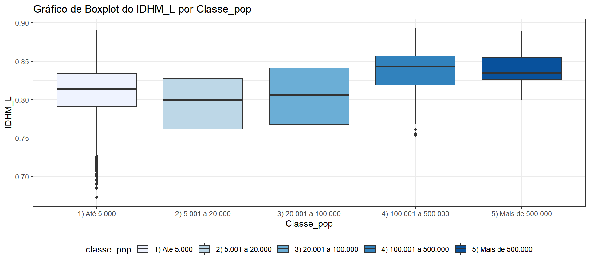

# Pacotes -----------------------------------------------------------------
library(tidyverse)
library(janitor)Explorando Indicadores Sociais com R e RStudio
Exercícios - Unidade 4
Apresentação
Este exercício foi elaborado no curso Explorando Indicadores Sociais com o R e o RStudio, que faz parte da iniciativa de extensão do Observatório de Populações e Políticas Públicas (ObPPP), em parceira com o InfoSoc, ambos projetos vinculados ao Departamento de Ciências Sociais da Universidade Estadual de Londrina (UEL), para difundir métodos computacionais que possam fortalecer a capacidade de avaliação e monitoramento de políticas públicas, sobretudo as ações municipais que atendam aos Objetivos do Desenvolvimento Sustentável (ODS).
Professores:
Prof. Ronaldo Baltar
Prof.ª Cláudia Siqueira Baltar
Preparação
Pacotes
Leitura
# Leitura -----------------------------------------------------------------
dados <- readRDS("c1r1_dic_tbl.rds")Limpeza
# Limpeza dos nomes das variáveis -----------------------------------------
dados <- clean_names(dados)Sobre o banco de dados
Dados oriundos do Atlas Brasil.
# Sobre o banco de dados --------------------------------------------------
glimpse(dados)Rows: 5,186
Columns: 15
$ ano_x <dbl> 2010, 2010, 2010, 2010, 2010, 2010, 2010, 2010, 2010, 201~
$ uf <dbl> 11, 11, 11, 11, 11, 11, 11, 11, 11, 11, 11, 11, 11, 11, 1~
$ codmun7 <dbl> 1100015, 1100023, 1100031, 1100049, 1100056, 1100064, 110~
$ municipio <chr> "ALTA FLORESTA D'OESTE", "ARIQUEMES", "CABIXI", "CACOAL",~
$ idhm <dbl> 0.641, 0.702, 0.650, 0.718, 0.692, 0.685, 0.613, 0.611, 0~
$ idhm_e <dbl> 0.526, 0.600, 0.559, 0.620, 0.602, 0.584, 0.473, 0.493, 0~
$ idhm_l <dbl> 0.763, 0.806, 0.757, 0.821, 0.799, 0.814, 0.774, 0.751, 0~
$ idhm_r <dbl> 0.657, 0.716, 0.650, 0.727, 0.688, 0.676, 0.630, 0.616, 0~
$ classe_idhm <chr> "3) Médio", "4) Alto", "3) Médio", "4) Alto", "3) Médio",~
$ classe_pop <chr> "3) 20.001 a 100.000", "3) 20.001 a 100.000", "2) 5.001 a~
$ urbano_rural <chr> "Urbano", "Urbano", "Rural", "Urbano", "Urbano", "Urbano"~
$ ano_y <dbl> 2013, 2013, 2013, 2013, 2013, 2013, 2013, 2013, 2013, 201~
$ nome <chr> "Alta Floresta D'Oeste", "Ariquemes", "Cabixi", "Cac~
$ ideb_ai <dbl> 5.4, 4.9, 5.6, 5.8, 6.2, 6.2, 5.4, 5.4, 5.8, 4.7, 5.1, 5.~
$ ideb_af <dbl> 3.9, 4.2, 4.1, 4.5, 3.6, 3.9, 4.3, 2.6, 4.9, 3.5, 3.7, 3.~Exercícios
Exercício 1: Crie um gráfico de barras com a variável classe_idhm.
Exercício 2: Crie um gráfico de barras com a variável classe_pop.
Exercício 3: Crie um gráfico de barras com a variável urbano_rural.
Exercício 4: Crie um gráfico Boxplot da variável IDEB_AI (Anos Iniciais) por classe_idhm.
Exercício 5: Crie um gráfico Boxplot da variável IDEB_AF (Anos finais) por classe_idhm.
Exercício 6: Crie um gráfico Boxplot do IDHM por classe_pop.
Exercício 7: Crie um gráfico Boxplot do IDHM_E por classe_pop.
Exercício 8: Crie um gráfico Boxplot do IDHM_L por classe_pop.

Exercício 9: Crie um gráfico Boxplot do IDHM_R por classe_pop.
Exercício 10: De maneira sucinta, numa primeira observação, escreva o que você consegue perceber, comparando os gráficos boxplot IDHM_L, IDHM_R, IDHM_E por classe_pop.
Em uma avaliação global sobre os três subíndices que compõem o IDHM é possível visualizar que nas classes que compreendem os grupos 1 (até 5.000), 2 (de 5.001 a 20.000) e 3 (20.001 a 100.000) há indícios de maior dispersão dos dados, ou seja, há mais variabilidade nos dados que estão entre o primeiro (Q1) e terceiro quartil (Q3). Por outro lado, já nas classes com mais de 500.000 habitantes ocorre o inverso, a caixa é menor nos três subíndices, o que indica que os dados são mais homogêneos para este grupo, com menos variabilidade.